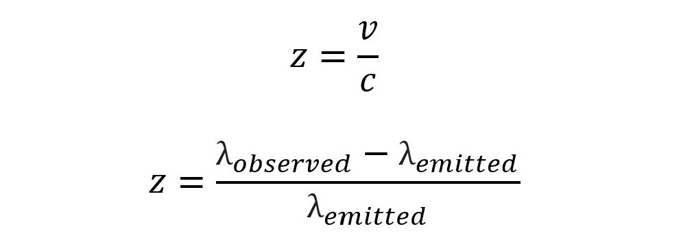
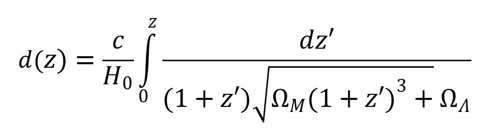
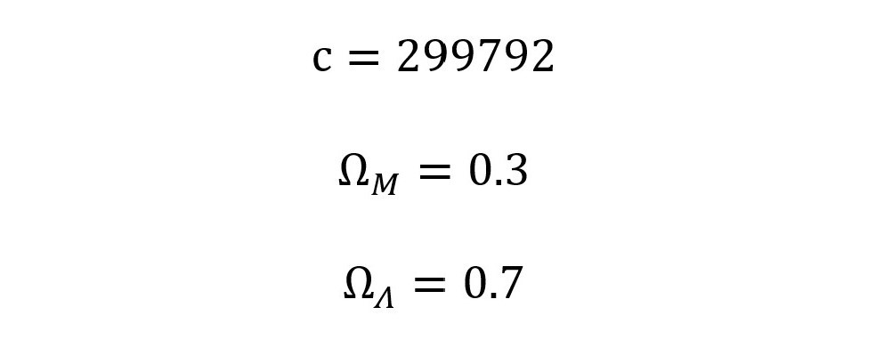

This calculator was created by Neha Deshpande for the final project for ASTR 2105 Cosmology: Our Universe.
The input for this calculator is the initial distance between an object and the Earth, the initial wavelength of a photon, and the Hubble constant. The output of the calculator is the current distance to the object, the observed wavelength, and the distance traveled by the photon.
Initial distance between the object and the Earth: (unit: megaparsec)
Initial wavelength of the photons: (unit: kilometers)
Hubble constant: (unit: kilometers per second per megaparsec)
Current distance to object: N/A
Observed wavelength: N/A
Distance traveled by photon: N/A
The first equation used in this simulation is Hubble's Law, shown below. Hubble's Law describes a relationship between the distance of two objects in the universe, which is D, and how fast they are moving apart, which is v. The further apart the two objects are, the faster they are moving. The Hubble constant represents the constant of proportionality, which determines how fast they are moving based on the distance. The Hubble constant changes over time.
The second and third equation define redshift, z, which is the increase in a photon's wavelength due to the source and the destination moving apart. In a flat universe, the formula for redshift is the velocity divided by the speed of light. Another way to get the value for redshift is to subtract the emitted wavelength value from the observed wavelength value, then divide by the emitted wavelength.
The next formula determines the total distance traveled by a photon. Since the universe is expanding, we need to use an integral rather than simply multiplying. It is also important to take into account the values for the matter density parameter, and the dark energy density parameter.
Here are some of the constants that were used in this calculator. First of all, the speed of light (c) is equal to 299792 kilometers per second. Next, we have two density parameters, which is the average density of matter and energy in the universe divided by the critical density. In this simulation, the matter density parameter is assumed to be equal to 0.3, and the dark energy density parameter is assumed to be equal to 0.7. The symbols and values for these constants are shown below.
For more information about cosmological redshift, click on the following links!
Foundations of Modern Cosmology by Katherine A. Holcomb